Mission:
Mars
2006
SpaceX is a private American aerospace manufacturer and space transportation services company. SpaceX is headquartered in Hawthorne, California, United States. SpaceX was founded 18 years ago, on May 6, 2002 by billionare Elon Musk with the goal of reducing space transportation costs to enable the colonization of Mars.
Elon Musk holds 54% of SpaceX's equity with 78% controlled by voting control. As of 2020, SpaceX has 8000 employees and is worth more than $33.3 billion.

SpaceX Logo
“You want to wake up in the morning and think the future is going to be great - and that’s what being a spacefaring civilization is all about. It’s about believing in the future and thinking that the future will be better than the past. And I can’t think of anything more exciting than going out there and being among the stars.”
-Elon Musk
Elon Musk holds 54% of SpaceX's equity with 78% controlled by voting control. As of 2020, SpaceX has 8000 employees and is worth more than $33.3 billion.
SpaceX Logo
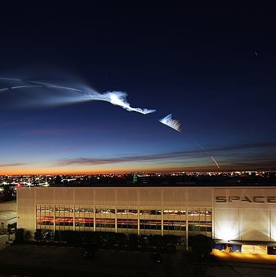
Space X HQ during Iridium-4 Launch
Space X HQ during Iridium-4 Launch
“You want to wake up in the morning and think the future is going to be great - and that’s what being a spacefaring civilization is all about. It’s about believing in the future and thinking that the future will be better than the past. And I can’t think of anything more exciting than going out there and being among the stars.”
-Elon Musk
2008
Falcon 1 was an expandable launch system privately developed and manufactured by SpaceX during 2006-2009. On the 28th of September 2008, Falcon 1 became the first privately-developed liquid-fuel launch vehicle to go into orbit around the earth.
SpaceX’s family of Falcon launch vehicles are the first and only orbital class rockets capable of reflight. Depending on the performance required for the mission, Falcon lands on one of our autonomous spaceport droneships out on the ocean or one of our landing zones near our launch pads. Several years ago, SpaceX was going to open up the smallsat launch market with the Falcon 1, which originally was to launch about 600 kilograms to LEO for $6 million; the payload capacity later declined to about 420 kilograms as the price increased to around $9 million. Later, the Falcon 1e was to provide approximately 1,000 kilograms for $11 million, but the company withdrew the vehicle from the market, citing limited demand.
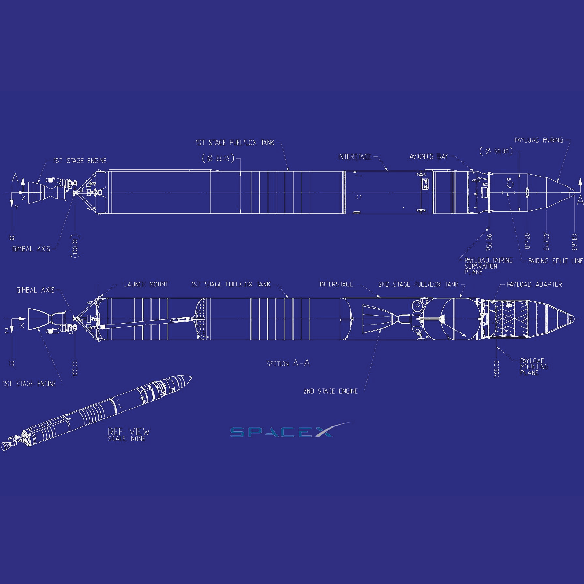
Falcon 1 Blueprint
Falcon 1 Blueprint
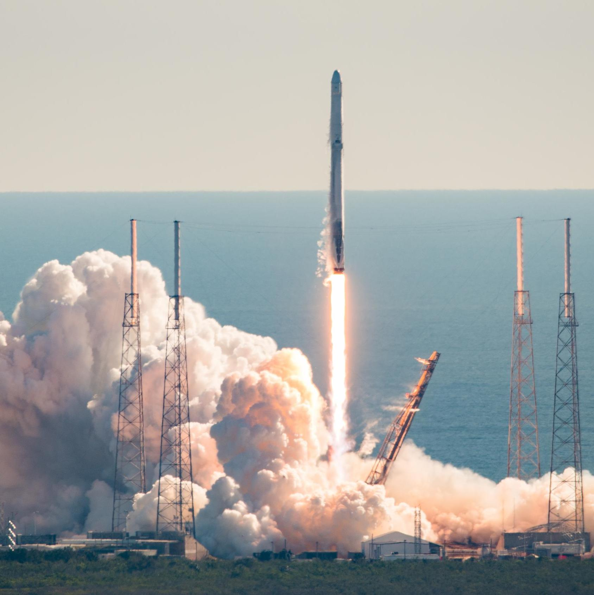
Falcon 1 Launch
Falcon 1 Launch
SpaceX’s family of Falcon launch vehicles are the first and only orbital class rockets capable of reflight. Depending on the performance required for the mission, Falcon lands on one of our autonomous spaceport droneships out on the ocean or one of our landing zones near our launch pads. Several years ago, SpaceX was going to open up the smallsat launch market with the Falcon 1, which originally was to launch about 600 kilograms to LEO for $6 million; the payload capacity later declined to about 420 kilograms as the price increased to around $9 million. Later, the Falcon 1e was to provide approximately 1,000 kilograms for $11 million, but the company withdrew the vehicle from the market, citing limited demand.
2012
The SpaceX Dragon, alson known as Dragon 1 or Cargo Dragon and now superseded by Dragon 2, is a reusable cargo spacecraft. Dragon was launched into orbit by SpaceX's Falcon 9 launch vehicle to resupply the International Space Station. On 25 May 2012, a cargo variant of Dragon became the first commercial spacecraft to successfully redezvous with and attach to the ISS.
On 23 December 2008, NASA awarded a $1.6 billion Commercial Resupply Services (CRS) contract to SpaceX, with contract options that could potentially increase the maximum contract value to $3.1 billion.[28] The contract called for 12 flights, with an overall minimum of 20,000 kg (44,000 lb) of cargo to be carried to the ISS.
In 2014, SpaceX released the total combined development costs for both the Falcon 9 launch vehicle and the Dragon capsule. NASA provided US$396 million while SpaceX provided over US$450 million to fund both development efforts.
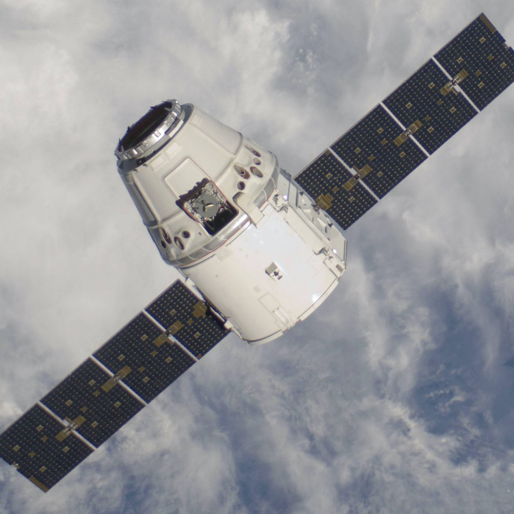
Dragon 1
Dragon 1
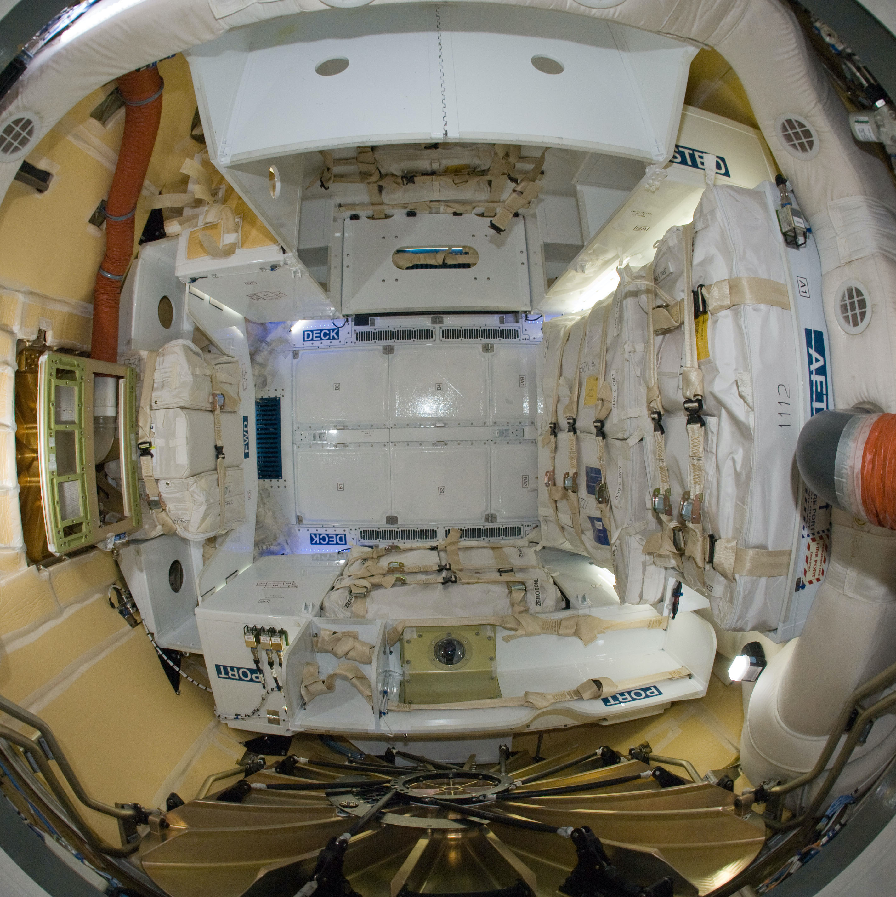
Inside Dragon 1
Inside Dragon 1
On 23 December 2008, NASA awarded a $1.6 billion Commercial Resupply Services (CRS) contract to SpaceX, with contract options that could potentially increase the maximum contract value to $3.1 billion.[28] The contract called for 12 flights, with an overall minimum of 20,000 kg (44,000 lb) of cargo to be carried to the ISS.
In 2014, SpaceX released the total combined development costs for both the Falcon 9 launch vehicle and the Dragon capsule. NASA provided US$396 million while SpaceX provided over US$450 million to fund both development efforts.
2015
Falcon 9 is a partially reusable two-stage-to-orbit medium-lift launch vehicle powered by Merlin engines, burning cryogenic liquid oxygen and rocket grade kerosene (RP-1) as propellants. Its name is derived from the fictional Star Wars spacecraft, the Millennium Falcon. Falcon 9 became the first orbital rocket to achieve propulsive landing.
Falcon 9 is the world’s first orbital class reusable rocket. Reusability allows SpaceX to refly the most expensive parts of the rocket, which in turn drives down the cost of space access. Falcon 9 has a total of 85 launches, 46 landings, and 32 reflown rockets. Since May 2016, the standard price for a Falcon 9 Full Thrust mission (allowing booster recovery) is published as $62 million.
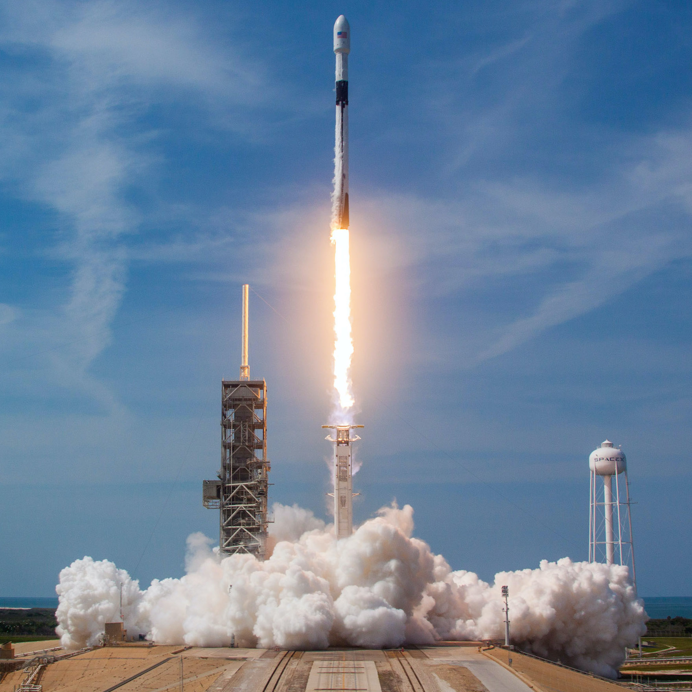
Falcon 9 Launch
Falcon 9 Launch
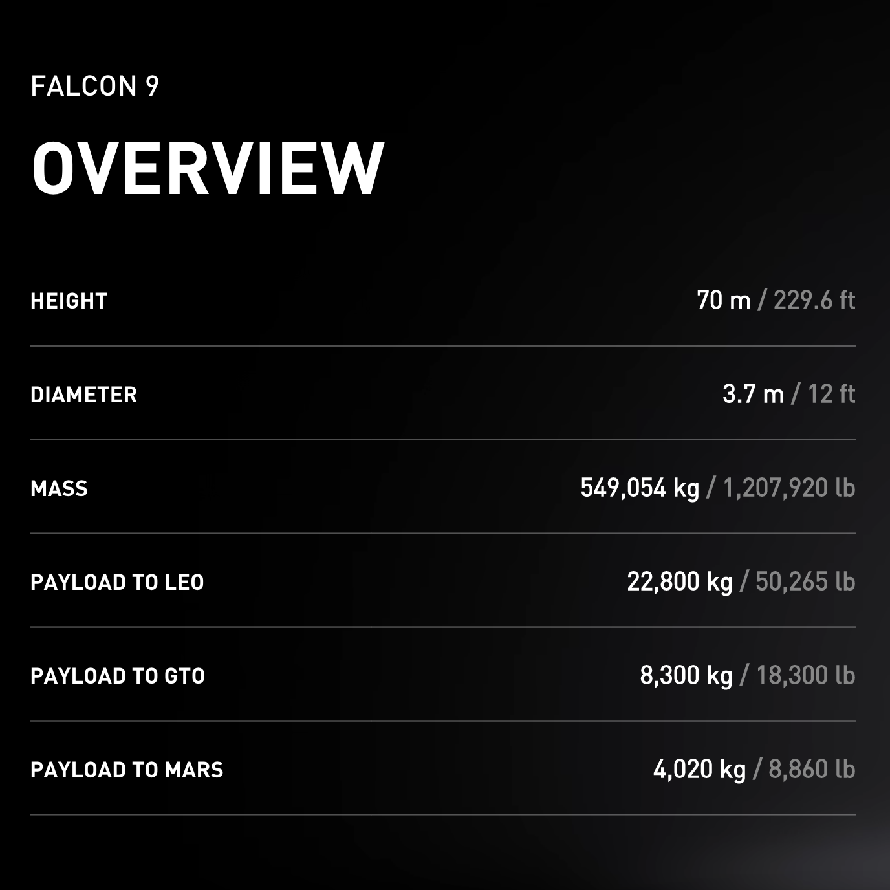
Falcon 9 Overview
Falcon 9 Overview
Falcon 9 is the world’s first orbital class reusable rocket. Reusability allows SpaceX to refly the most expensive parts of the rocket, which in turn drives down the cost of space access. Falcon 9 has a total of 85 launches, 46 landings, and 32 reflown rockets. Since May 2016, the standard price for a Falcon 9 Full Thrust mission (allowing booster recovery) is published as $62 million.
2018
Falcon Heavy is a partially reusable heavy-lift launch vehicle. This has the highest payload capacity of any currently operational launch vehicle, the second-highest capacity of any rocket to ever reach orbit and the third highest capacity of any orbital-class rocket ever launched successfully. Falcon Heavy's maiden launch occured on February 6, 2018 at 3:45 p.m. EST, carrying a Tesla Roadster belonging to Elon Musk.
Falcon Heavy: The worlds most powerful rocket.
The Falcon Heavy was developed with private capital with Musk stating that the cost was more than $500 million. No government financing was provided for its development.
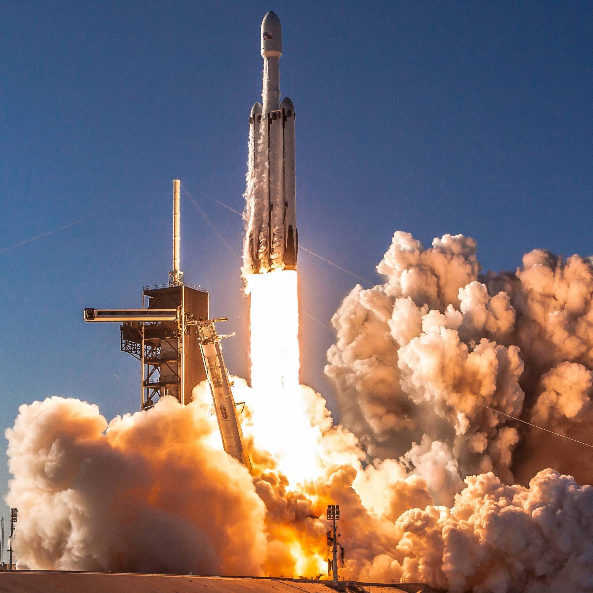
Falcon Heavy Launch
Falcon Heavy Launch
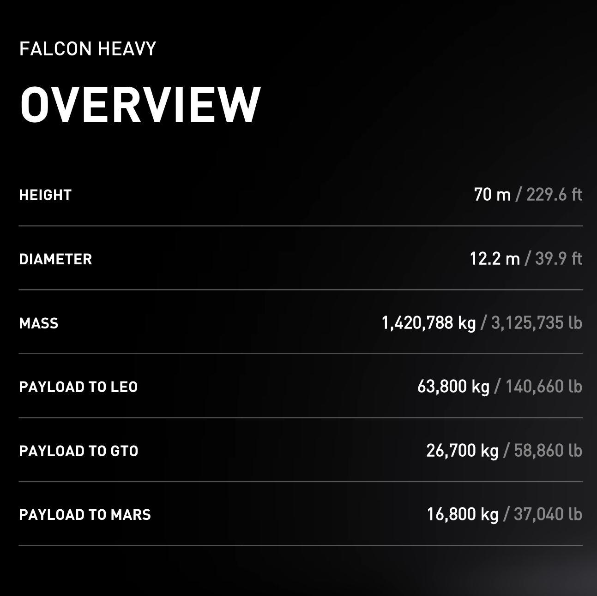
Falcon Heavy Overview
Falcon Heavy Overview
Falcon Heavy: The worlds most powerful rocket.
The Falcon Heavy was developed with private capital with Musk stating that the cost was more than $500 million. No government financing was provided for its development.
2020
Dragon 2 is a class of reusable spacecraft and the successor to the Dragon 1 cargo spacecraft. As of March 2020, four Dragon 2 spacecraft have been manufactured. Crew Dragon's first non-piloted test flight occured in March 2019, and its first crewed flight - with astronauts Robert L. Behnken and Douglas G. Hurley - occured 30 May 2020 at 3:22 p.m. ET. This test flight marked the first time a private company launched a crewed orbital spacecraft
The Dragon spacecraft is capable of carrying up to 7 passengers to and from Earth orbit, and beyond. It is the only spacecraft currently flying that is capable of returning significant amounts of cargo to Earth, and will soon become the first private spacecraft to take humans to the space station.
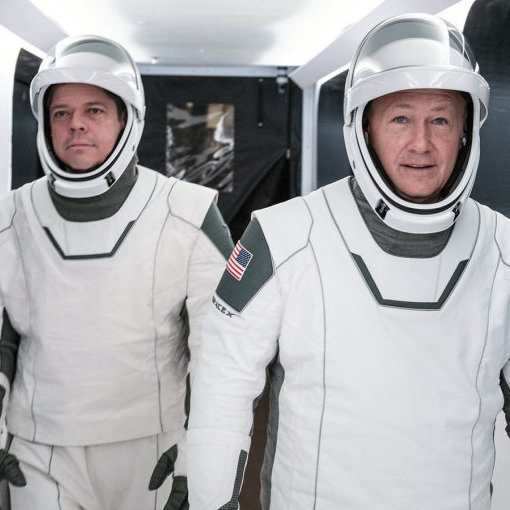
Dragon 2 Astronauts
Dragon 2 Astronauts
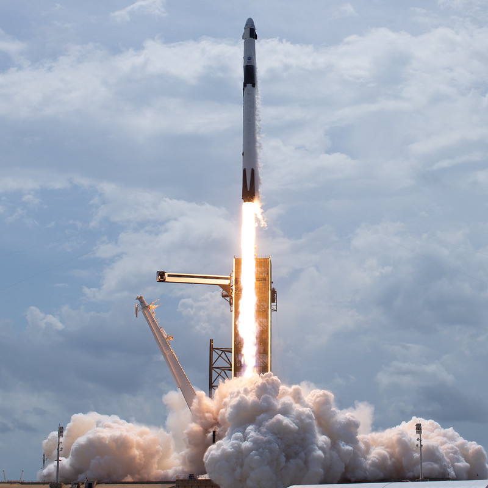
Dragon 2 Launch
Dragon 2 Launch
The Dragon spacecraft is capable of carrying up to 7 passengers to and from Earth orbit, and beyond. It is the only spacecraft currently flying that is capable of returning significant amounts of cargo to Earth, and will soon become the first private spacecraft to take humans to the space station.
2050
SpaceX have proposed the development of Mars transportation infrastructure in order to facilitate the eventual colonization of Mars. The mission architecture includes fully reusable launch vehicles, human-rated spacecraft, on-orbit propellant tankers, rapid-turnaround launch/landing mounts, and local production of rocket fuel on Mars via in situ resource utilisation (ISRU). Musk plans to send a SpaceX rocket to Mars with cargo only, by 2022. A second mission, which would take more cargo and crew is targeted for 2024. Musk states that he'll send a million people to Mars by 2050.
Organizations have proposed plans for a human mission to Mars, the first step towards any colonization effort, but no person has set foot on the planet. However, landers and rovers have successfully explored the planetary surface and delivered information about conditions on the ground. Reasons for colonizing Mars include pure curiosity, the potential for humans to provide more in-depth observational research than unmanned rovers, economic interest in its resources, and the possibility that the settlement of other planets could decrease the likelihood of human extinction.
"I'll probably be long dead before Mars becomes self-sustaining. But I'd like to at least be around to see a bunch of ships land on Mars"
-Elon Musk
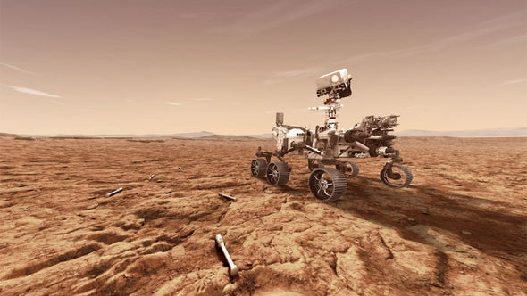
Planet Mars
Planet Mars
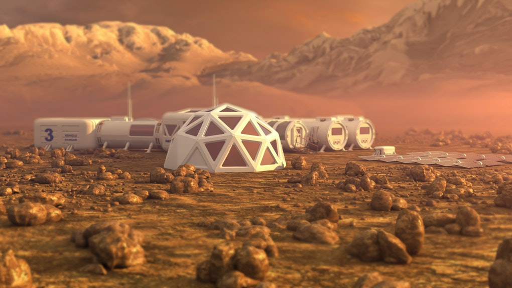
Colonization of Mars
Colonization of Mars
Organizations have proposed plans for a human mission to Mars, the first step towards any colonization effort, but no person has set foot on the planet. However, landers and rovers have successfully explored the planetary surface and delivered information about conditions on the ground. Reasons for colonizing Mars include pure curiosity, the potential for humans to provide more in-depth observational research than unmanned rovers, economic interest in its resources, and the possibility that the settlement of other planets could decrease the likelihood of human extinction.
"I'll probably be long dead before Mars becomes self-sustaining. But I'd like to at least be around to see a bunch of ships land on Mars"
-Elon Musk